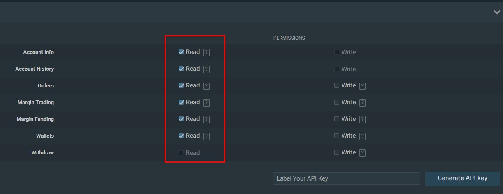

Our bot tracks the Bitfinex trades of each slack member that has submitted their API key to participate in testing. This allows our slack members to follow actual trading movements rather than just trusting arguments.
We trade with advanced information
Currently under development - Alpha test is underway!
Slack Bots can help share information and improve communication between our community members. We created a bot that garners trading movements of our members via bitfinex API and shares in our bot channel: "Daily Position Movements".
FAQ
While the slack bot is still under development, we are already receiving valuable trading information.
-
What does the bot do?
-
Is it secure?
Since we only need the "wallet view" API key from Bitfinex and do not require trade access, all information is not only anonymous but is completly safe to share.
-
How do I participate?
You can submit your bitfinex API key in the form below. Make sure to only activate wallet view permissions before you submit the form. If our algorithmic check cannot access the data, or finds that excessive permissions were granted, the key is automaticly deleted.
-
How do I delete my API key from the bot again?
On Bitfinex you can create and destroy an API key at any time. Just delete the shared API key and the bot will automatically unfollow your trading movements.
Constant Improvements
While we may be in the alpha stages of our trading bot now, we are working hard to ensure that the cryptotrade bot will improve its output and usefullness significantly over time.
Anonymous
We dont store ANY IP information, and will not have access to email adresses or locations with the given API settings.
Security
We only transfer via https SSL protocols, and store all API keys on a secure Google Firebase server. Since the bot exclusively receives "read only" API permissions, its sole purpose is to be used for analytics and nothing more.
Bot Messages
Using the information from the bot's API we will be able to create regular custom info-graphics depicting how our slack group performed compared to the market.
Unlimited
You only need to set up the API once, while the analaytics algorithms will do their job forever. If you don't want to participate anymore, simply delete the API key in your Bitfinex profile.
Fast
Thanks to generous support, we use state of the art VPN servers to guarantee unlimited development potentials.
Participate - Alpha Test
To contribute to the slack bot which helps finding a trading consensus, please add your Bitfinex API key with "read only" permissions. You can generate a custom API key on the Bitfinex API profile page. The specific permissions for the "read only" key are indicated in the screenshot below. All keys will be stored securely and are kept completely anonymous.

Upon pressing "submit" you will not see a response or notification (which I will add later) but it will work anyways.